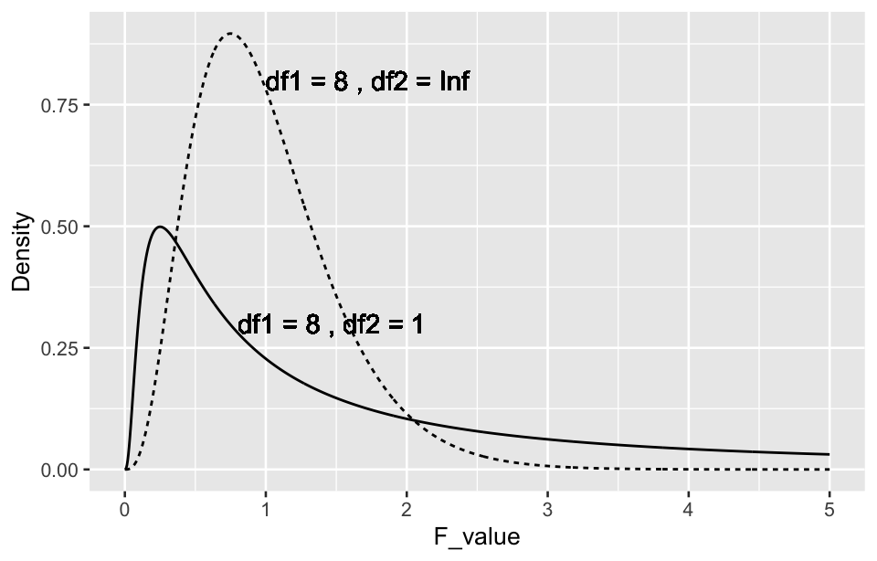

library(tidyverse)7 t-test
A t-test is a statistical test used to compare the means of two groups to determine if they are significantly different from each other. It is commonly used in situations where the sample size is small and the population variance is unknown. There are different types of t-tests depending on the study design and the nature of the data.
7.1 Prerequisites
7.2 One-sample t-test
The one-sample t-test is used to determine whether the mean of a single sample is significantly different from a known or hypothesized population mean. It is commonly used when you have a sample and want to test if its mean differs from a theoretical value or an expected value. Its test statistic t is calculated as follows:
t = \frac{\bar{X} - \mu_0}{S_{\bar{X}}} = \frac{\bar{X} - \mu_0}{S / \sqrt{n}}
where \bar{X} si the sample mean , S is the sample standard deviation and n is the sample size, \mu_0 is the hypothesized population mean.
The one-sample t-test is a straightforward but powerful tool for hypothesis testing in many research scenarios.
Example 1:
A doctor measured the hemoglobin concentration in 36 male workers involved in lead-related jobs. The data can be downloaded below. The question is whether the mean hemoglobin concentration (\mu) of male workers involved in lead-related jobs differs from the mean of 140 (g/L) for normal adult males.
R codes for one-sample t-test is:
read_csv("datasets/ex07-01.csv", show_col_types = F) |>
t.test(mu = 140) #>
#> One Sample t-test
#>
#> data: read_csv("datasets/ex07-01.csv", show_col_types = F)
#> t = -2.1367, df = 35, p-value = 0.03969
#> alternative hypothesis: true mean is not equal to 140
#> 95 percent confidence interval:
#> 122.1238 139.5428
#> sample estimates:
#> mean of x
#> 130.8333The results show t = -2.1367 , \text{p-value} = 0.03969. At the significance level of \alpha = 0.05 , reject H_0 and accept H_1, indicating that the difference is statistically significant. In the context of this case, it can be concluded that the average hemoglobin concentration of male workers engaged in lead work is lower than the average hemoglobin concentration of normal adult males.
7.3 Paired t-test
The paired t-test is used to compare the means of two related groups. This test is typically used when the observations are paired in some meaningful way, such as measurements taken on the same subjects at two different times or under two different conditions.
- H_0 : The mean difference between the paired observations is zero (\mu_d = 0).
- H_1 : The mean difference between the paired observations is not zero (\mu_d \neq 0).
The test statistic for the paired t-test is calculated as:
t = \frac{\bar{d}}{S_d / \sqrt{n}} Where \bar{d} is the mean of the differences between the paired observations, S_d is the standard deviation of the differences, and n is the number of pairs.
Example 2:
To compare whether the results of fat content measurement in lactic acid beverages differ between two methods, 10 samples of lactic acid beverages were randomly selected. The fat content was measured using both the Gerber-Gottlieb method and the fatty acid hydrolysis method. The data can be downloaded below. The question is whether the measurement results from the two methods are different?
R codes for paired t-test is:
read_csv("datasets/ex07-02.csv", show_col_types = F) |>
with(t.test(x1, x2, paired = T))#>
#> Paired t-test
#>
#> data: x1 and x2
#> t = 7.926, df = 9, p-value = 2.384e-05
#> alternative hypothesis: true mean difference is not equal to 0
#> 95 percent confidence interval:
#> 0.1946542 0.3501458
#> sample estimates:
#> mean difference
#> 0.2724The results show t = -2.1367 , \text{p-value} < 0.001. At the significance level of \alpha = 0.05, reject H_0 and accept H_1, indicating that the difference is statistically significant. It can be concluded that the two methods yield different fat content measurements. As mean difference estimation is 0.2724 > 0, the Gerber-Gottlieb method providing higher results.
7.4 Two-sample t-test
The two-sample t-test (also known as the independent t-test) is used to determine whether there is a significant difference between the means of two independent groups. It is commonly used in experiments or studies where researchers want to compare the means of two different populations or conditions.
In medical study it is commonly used to compare the means of two samples in a completely randomized design. In this design, subjects are randomly assigned to two different treatment groups, and the researcher is interested in whether the means of these two samples represent different population means. Additionally, in observational studies, the two-sample t-test can be used to compare the means of two samples obtained through independent random sampling from two different populations.
When both samples come from normal populations, and the sample sizes are relatively small, such as n_1 \leq 60 or/and n_2 \leq 60 , different testing methods should be used depending on whether the population variances are equal.
7.4.1 The t-test for equal population variances
The t-test for equal population variances, often referred to as the pooled variance t-test, is used when comparing the means of two independent samples under the assumption that the two populations have the same variance. This assumption allows the variances of the two samples to be combined (or pooled) into a single estimate, which can then be used in the t-test formula.
Before conducting the combined t-test, it’s common to perform an F-test to check if the variances of the two samples are equal. If the p-value from the F-test is not significant, the pooled t-test can be justified. The pooled variance is calculated as a weighted average of the variances from the two samples:
S_c^2 = \frac{(n_1 - 1)S_1^2 + (n_2 - 1)S_2^2}{n_1 + n_2 - 2}
Here, S_c^2 is the combined variance, S_1^2 and S_2^2 are the variances of the two samples, and n_1 and n_2 are the sample sizes.
Once the combined variance is calculated, the t-statistic for the two-sample t-test can be computed as:
t = \frac{\bar{X}_1 - \bar{X}_2}{\sqrt{S_c^2 \left(\frac{1}{n_1} + \frac{1}{n_2}\right)}}
\bar{X}_1 and \bar{X}_2 are the sample means, and n_1 and n_2 are the sample sizes. The degrees of freedom for the pooled variance t-test are calculated as n_1 + n_2 - 2. 5.
H_0: There is no difference between the population means (\mu_1 = \mu_2).
H_1: There is a difference between the population means (\mu_1 \neq \mu_2).
If the variances are unequal, the Welch t-test (which does not assume equal variances) is recommended.
Example 3:
To investigate the anti-atherosclerotic effects of tetrandrine on rabbits, an atherosclerosis rabbit model was established using a high-fat diet over 12 weeks. 16 rabbits successfully modeled after 12 weeks were randomly divided into two groups. The group A was given a high-fat diet of 100g/day, while the group B was given the same high-fat diet along with an additional 109mg/(kg·d) of tetrandrine mixed into the feed. After continuous feeding for 3 weeks, blood was drawn from the heart at the end of the experiment to measure the high-density lipoprotein (mmol/L) levels in the heart blood. The data can be downloaded below. Can it be concluded that the population means of high-density lipoprotein content in the heart blood differ between group A and B?
R codes for two-sample t-test is:
read_csv("datasets/ex07-03.csv", show_col_types = F) |>
mutate(grp = factor(grp, labels = c("A", "B"))) |>
t.test(x ~ grp, data = _, var.equal = T)- 1
- Use the pipe operator to perform t-test with a group variable and a response variable.
#>
#> Two Sample t-test
#>
#> data: x by grp
#> t = 3.689, df = 14, p-value = 0.00243
#> alternative hypothesis: true difference in means between group A and group B is not equal to 0
#> 95 percent confidence interval:
#> 0.05494115 0.20755885
#> sample estimates:
#> mean in group A mean in group B
#> 0.77000 0.63875The results show t = 3.689 , \text{p-value} = 0.00243. At the \alpha = 0.05 significance level, reject H_0 and accept H_1, indicating that the difference is statistically significant. It can be concluded that the population means of high-density lipoprotein content in the heart blood are different between group A and B. Considering the sample means in this case, it can be inferred that the population mean of high-density lipoprotein content in the heart blood is higher in group A than in the model group.
7.4.2 Welch t-test for unequal population variances
Unlike the combined variance t-test, the Welch t-test does not assume that the two populations have the same variance. This is particularly useful when you suspect or know that the variances are different, or when the sample sizes are quite different, which makes it more flexible than the combined variance t-test.
The t-statistic for the Welch t-test is calculated as:
t = \frac{\bar{X}_1 - \bar{X}_2}{\sqrt{\frac{S_1^2}{n_1} + \frac{S_2^2}{n_2}}}
Here, \bar{X}_1 and \bar{X}_2 are the sample means, S_1^2 and S_2^2 are the variances of the two samples, and n_1 and n_2 are the sample sizes.
The degrees of freedom for the Welch t-test are calculated using the Welch-Satterthwaite equation:
\nu = \frac{\left(\frac{S_1^2}{n_1} + \frac{S_2^2}{n_2}\right)^2}{\frac{\left(\frac{S_1^2}{n_1}\right)^2}{n_1 - 1} + \frac{\left(\frac{S_2^2}{n_2}\right)^2}{n_2 - 1}}
This formula typically results in a non-integer value for the degrees of freedom, which is a characteristic of the Welch t-test. It is generally considered more robust than the combined variance t-test in situations where variances differ.
Example 4:
To analyze the effect of blood glucose control on serum total cholesterol levels, a study was conducted on type 2 diabetes patients in a community. Hemoglobin A1c levels below 7.0% were used as the target for blood glucose control. Total cholesterol levels (mmol/L) were measured in 25 patients with poor blood glucose control (Group A) and 25 patients with good blood glucose control (Group B). The data can be downloaded below. Determine whether the mean total cholesterol levels of those with poor blood glucose control and those with good blood glucose control are equal or not.
R codes for Welch t-test is:
read_csv("datasets/ex07-04.csv", show_col_types = F) |>
t.test(x ~ grp, data = _, var.equal = F) #>
#> Welch Two Sample t-test
#>
#> data: x by grp
#> t = -2.8322, df = 36.672, p-value = 0.007465
#> alternative hypothesis: true difference in means between group 1 and group 2 is not equal to 0
#> 95 percent confidence interval:
#> -1.4177999 -0.2350001
#> sample estimates:
#> mean in group 1 mean in group 2
#> 4.3176 5.1440The results show t = -2.8322 , \text{p-value} = 0.007465. At the \alpha = 0.05 significance level, reject H_0 and accept H_1, indicating that the difference is statistically significant. Therefore, we can conclude that the mean total cholesterol levels between those with poor and good blood glucose control are different.
7.5 Normality test and F-test
When conducting a two-sample t-test, especially when comparing the means of two small samples, it is required that the corresponding populations follow a normal distribution and that the population variances are equal, known as homogeneity of variance. For paired t-tests, it is only necessary that the distribution of the differences between each pair of data points follows a normal distribution. Therefore, when performing a two-sample t-test with small samples, it is generally advisable to first conduct a homogeneity of variance test, particularly when there is a noticeable disparity between the sample variances. If the variances are homogeneous, a standard t-test is used; if not, an approximate t-test, such as Welch t-test, is applied. Additionally, it may be necessary to perform a normality test, though normality tests are more commonly used to establish medical reference ranges using normal distribution methods.
7.5.1 Normality test
Normality test has been discussed in Section 4.3 , for more details please move there.
7.6 F-test
The F-test was traditionally used to determine whether the variances of two populations are equal. However, this test assumes that the data follow a normal distribution, which is often not the case, especially when variances are unequal. Because of this limitation, the Levene’s test has become more popular in recent years. Levene’s test is more robust and does not rely on the specific distribution of the population. Levene’s test can be used to test the homogeneity of variances for both two populations and multiple populations. Here, only the F-test for comparing the variances of two samples is introduced.
H_0: The variances of the two populations are equal (\sigma_1^2 = \sigma_2^2).
H_1: The variances of the two populations are not equal (\sigma_1^2 \neq \sigma_2^2).
The F-statistic is calculated as the ratio of the two sample variances:
F = \frac{S_1^2}{S_2^2}
where S_1^2 and S_2^2 are the variances of the two samples. By convention, S_1^2 should be the larger variance, so the F-statistic is always greater than or equal to 1. The F-distribution depends on two parameters: the degrees of freedom for the numerator (\nu_1 = n_1 - 1) and the denominator (\nu_2 = n_2 - 1).
If the calculated F-statistic is is close to 1, the variances are similar. If it is much larger or smaller than 1, there may be a significant difference. If the p-value is less than the chosen significance level (e.g., 0.05), reject the null hypothesis, indicating that the variances are significantly different.
The F-test is sensitive to non-normality. If the data does not follow a normal distribution, the test may give misleading results. In such cases, non-parametric alternatives, such as the Levene’s test, may be more appropriate.
tibble(
F_value = seq(0, 5, length.out = 1000),
y1 = df(F_value, 8, 1),
y2 = df(F_value, 8, Inf)
) |>
pivot_longer(
cols = contains("y"),
names_to = "grp",
values_to = "Density"
) |>
ggplot(aes(x = F_value, y = Density, linetype = grp)) +
geom_line(linewidth = 0.5) +
geom_text(
aes(x = 0.8, y = 0.3, hjust = 0,
label = paste("df1 =", 8, ", df2 =", 1))) +
geom_text(
aes(x = 1, y = 0.8, hjust = 0,
label = paste("df1 =", 8, ", df2 =", Inf))) +
theme(legend.position = "none")
Example 5:
For Example 3, use the F-test to determine whether the variances of high-density lipoprotein content in the heart blood of the two populations are unequal.
read_csv("datasets/ex07-03.csv", show_col_types = F) |>
var.test(x ~ grp, data = _)#>
#> F test to compare two variances
#>
#> data: x by grp
#> F = 2.299, num df = 7, denom df = 7, p-value = 0.2944
#> alternative hypothesis: true ratio of variances is not equal to 1
#> 95 percent confidence interval:
#> 0.4602708 11.4833515
#> sample estimates:
#> ratio of variances
#> 2.299011The results show: F = 2.299, \text{p-value} = 0.2944, at the significant level of \alpha = 0.1, do not reject H_0. The difference is not statistically significant. Therefore, we cannot conclude that the variances of high-density lipoprotein content in the heart blood of the Qingfujian group and the model group are unequal. Consequently, Example 3 used a two-sample t-test under the assumption of equal variances.
Example 6:
For Example 4, Use the F test to determine whether the population variances of serum total cholesterol levels differ between those with poor and good blood glucose control.
read_csv("datasets/ex07-04.csv", show_col_types = F) |>
var.test(x ~ grp, data = _)#>
#> F test to compare two variances
#>
#> data: x by grp
#> F = 3.5022, num df = 24, denom df = 24, p-value = 0.0032
#> alternative hypothesis: true ratio of variances is not equal to 1
#> 95 percent confidence interval:
#> 1.543310 7.947462
#> sample estimates:
#> ratio of variances
#> 3.502199The results show: F = 3.5022, \text{p-value} = 0.0032, at the significant level of \alpha = 0.1, reject H_0, accept H_1. The difference is statistically significant. It can be considered that the population variances of total cholesterol levels differ between those with poor and good blood glucose control. Therefore, in Example 4, the two-sample t-test for unequal variances was used.